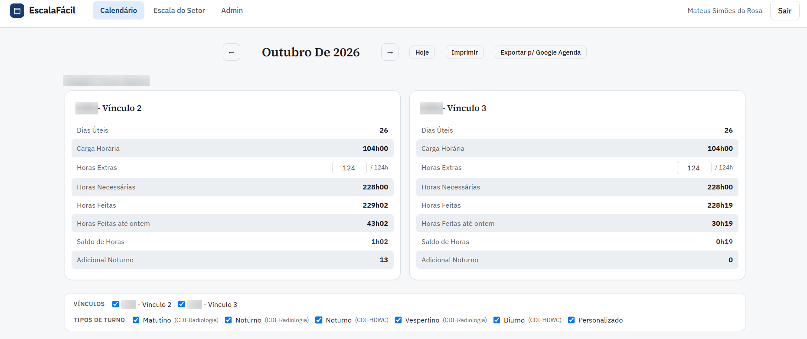
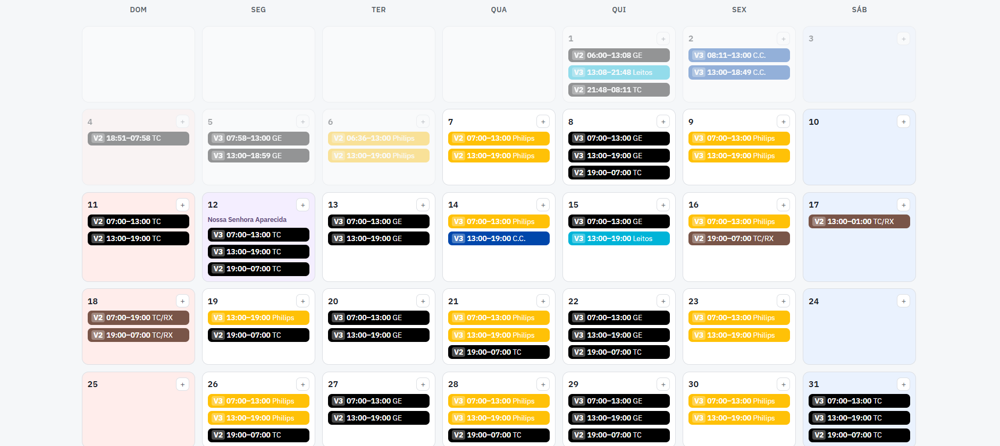
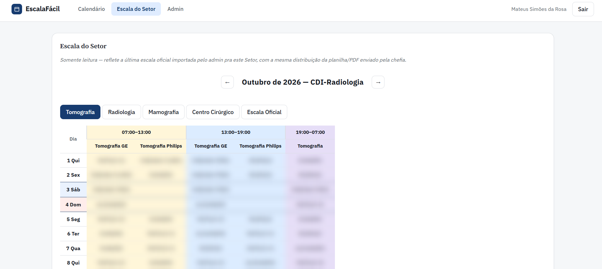
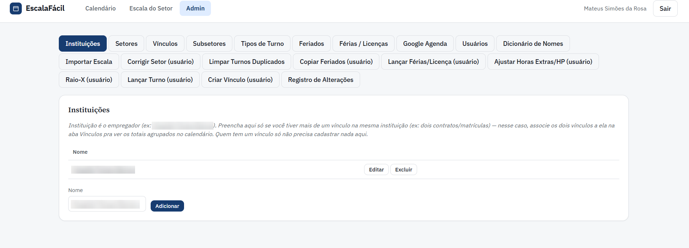
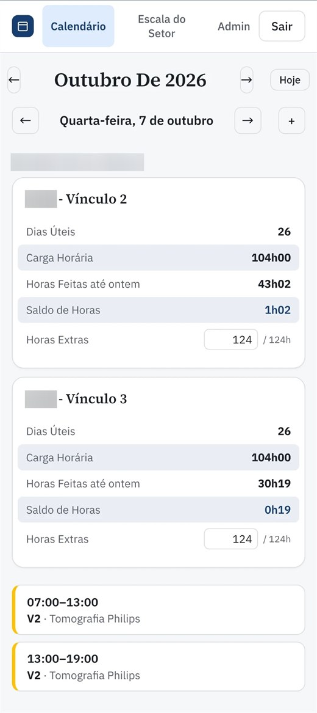
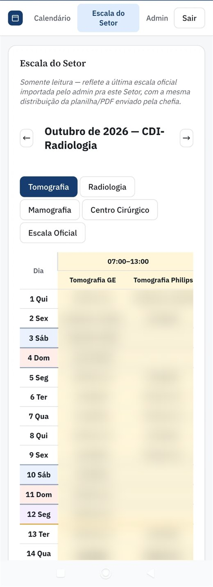
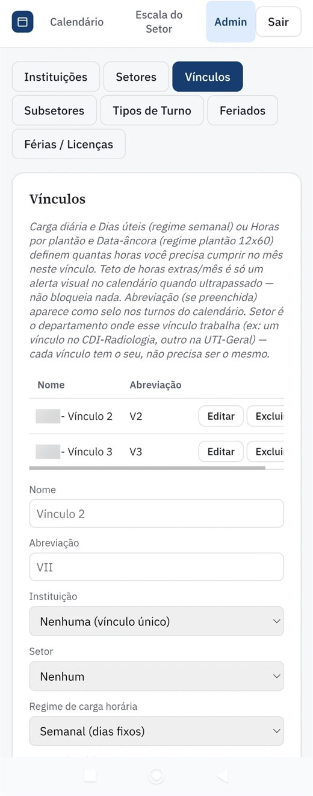

FOLHA Nº 01 — DETALHES DO PROJETO
EscalaFácil
Controle de Escala e Banco de Horas para Múltiplos Vínculos
App web que substituiu uma planilha de controle de plantões: o profissional lança os turnos num calendário e o sistema calcula sozinho horas feitas, horas necessárias e saldo do banco de horas, separadamente por vínculo empregatício. Também importa a escala oficial do setor e a publica para toda a equipe.
FOLHA Nº 02 — O DESAFIO
Dois vínculos, uma planilha frágil
Quem trabalha em turnos (plantões diurnos e noturnos, feriados, horas extras) e tem mais de um vínculo no mesmo hospital precisa saber, a qualquer momento, quantas horas já fez e quantas ainda faltam em cada contrato. Esse controle vivia numa planilha Excel cheia de fórmulas, atualizada à mão.
Além disso, a chefia do setor envia todo mês a escala oficial em planilha, e cada pessoa transcrevia os próprios plantões. O desafio era automatizar essa importação para a equipe inteira, mantendo os dados de cada pessoa isolados dos outros.
FOLHA Nº 03 — A SOLUÇÃO
Interface e Funcionalidades
No desktop, o calendário mostra o mês inteiro com os turnos de todos os vínculos sobrepostos; no celular, vira uma navegação dia a dia. Nas imagens abaixo, o nome da instituição e os nomes dos colegas na escala foram desfocados.

Painel de Totais por Vínculo
Dias úteis, carga horária, horas necessárias, horas feitas e saldo de cada vínculo, recalculados na hora a partir dos turnos lançados. Nada fica pré-calculado no banco, então qualquer edição aparece no saldo na mesma hora. Suporta regime semanal e plantão 12x60, feriados (inclusive os móveis, calculados a partir da data da Páscoa), férias, licenças e adicional noturno.

Calendário do Mês
Turnos coloridos por subsetor e identificados pelo vínculo, com detecção de conflito de horário mesmo entre empregos diferentes e exportação direta para o Google Agenda (reexportar atualiza o evento em vez de duplicar).

Escala do Setor
A planilha oficial enviada pela chefia é importada pelo admin: o app casa os nomes da planilha com a conta de cada pessoa por um dicionário de apelidos, grava os turnos de todo mundo e publica uma grade só-leitura para qualquer colega do setor conferir, inclusive quem ainda não usa o app. A importação substitui só o que veio da planilha anterior, então uma escala corrigida sobrescreve a provisória sem apagar o que cada um lançou manualmente.

Administração
Cadastro de instituições, vínculos, setores, tipos de turno, feriados e férias, além de ferramentas de suporte para corrigir dados na conta de outro usuário, com registro de alterações e sem precisar mexer no banco diretamente.
Versão Mobile (PWA)

Calendário Dia a Dia
Abaixo de 640px, o grid do mês vira uma navegação turno a turno, com um resumo enxuto de horas por vínculo.

Escala no Celular
A mesma grade oficial do setor, adaptada para a tela pequena.

Configuração de Vínculos
Regime semanal ou plantão 12x60, carga diária, teto de horas extras e setor de cada emprego.
FOLHA Nº 04 — ARQUITETURA
Sem framework, sem build, sem servidor
HTML, CSS e JavaScript puro com módulos ES nativos, sem nenhuma dependência de NPM nem etapa de build. O login é com Google via Firebase Authentication, os dados ficam no Cloud Firestore isolados por usuário pelas regras de segurança (que também validam o formato de cada turno gravado), e a hospedagem é no Firebase Hosting. Bibliotecas pesadas, como o leitor de planilhas, só são carregadas na tela que precisa delas. O cálculo de horas fica em funções puras cobertas por testes automatizados.
- JavaScript (ES Modules)
- Firebase Authentication
- Cloud Firestore
- Firebase Hosting
- Google Calendar API
- Importação .xlsx / .ods
- PWA Instalável